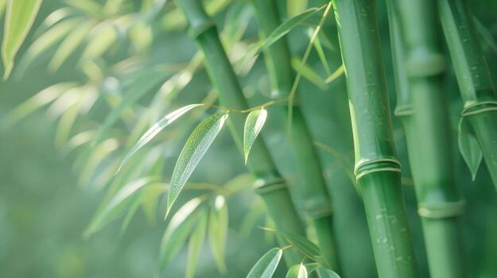

🌿 Overview / परिचय

Bamboo is a fast-growing evergreen plant belonging to the grass family. It is widely used for construction, furniture, paper, food, and environmental protection. Bamboo plays an important role in reducing pollution and preventing soil erosion.
बांबू ही गवत कुलातील जलद वाढणारी सदाहरित वनस्पती आहे. बांबूचा वापर बांधकाम, फर्निचर, कागद, अन्न आणि पर्यावरण संरक्षणासाठी केला जातो. मृदा धूप रोखण्यासाठी आणि प्रदूषण कमी करण्यासाठी बांबू उपयुक्त आहे.
📌 Basic Information / मूलभूत माहिती
Scientific Name
Bambusoideae
शास्त्रीय नाव
Family
Poaceae (Grass Family)
गवत कुल
Height
Up to 35 meters
३५ मीटरपर्यंत उंची
Lifespan
20–120 years
२०–१२० वर्षे
🌍 Where Bamboo is Found / बांबू कुठे आढळतो
- India / भारत
- China / चीन
- Japan / जपान
- Thailand / थायलंड
- Indonesia / इंडोनेशिया
- Brazil / ब्राझील
🎋 Types of Bamboo / बांबूचे प्रकार
| Species / प्रजाती | Common Name / सामान्य नाव | Where Found / कुठे आढळतो |
|---|---|---|
| Bambusa vulgaris |
Common Bamboo सामान्य बांबू |
India, Asia भारत, आशिया |
| Dendrocalamus strictus |
Male Bamboo नर बांबू |
India भारत |
| Phyllostachys edulis |
Moso Bamboo मोसो बांबू |
China चीन |
| Bambusa tulda |
Indian Timber Bamboo भारतीय इमारती बांबू |
Northeast India ईशान्य भारत |
💡 Uses of Bamboo / बांबूचे उपयोग
🏠 Construction
Used in houses and bridges
घर आणि पूल बांधकाम
🪑 Furniture
Used to make chairs and tables
फर्निचर बनवण्यासाठी
📄 Paper
Used in paper industry
कागद उद्योगात वापर
🍲 Food
Bamboo shoots are edible
बांबूचे कोवळे भाग खाण्यास योग्य
🌱 Environment
Controls soil erosion
मृदा धूप रोखतो
🌬️ Air Purification
Improves air quality
हवा शुद्ध करतो
📊 Amazing Facts / अद्भुत तथ्ये
- Bamboo is the fastest-growing plant in the world.
- बांबू जगातील सर्वात जलद वाढणारी वनस्पती आहे.
- Some species can grow 91 cm in one day.
- काही प्रजाती एका दिवसात ९१ सेंमी वाढतात.
- Bamboo releases 35% more oxygen than trees.
- बांबू इतर झाडांच्या तुलनेत ३५% अधिक ऑक्सिजन सोडतो.
- It absorbs large amounts of carbon dioxide.
- हे मोठ्या प्रमाणात कार्बन डायऑक्साइड शोषून घेते.
🕉️ Cultural Importance / सांस्कृतिक महत्त्व
Bamboo is considered a symbol of strength, flexibility, and prosperity in many Asian cultures. It is used in festivals, musical instruments, and traditional crafts.
अनेक आशियाई संस्कृतींमध्ये बांबू शक्ती, लवचिकता आणि समृद्धीचे प्रतीक मानले जाते. सण, वाद्ये आणि हस्तकलेमध्ये बांबूचा वापर होतो.